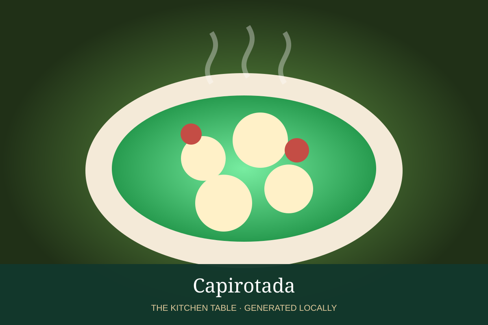

MEXICAN · DESSERTS & DRINKS
Capirotada
Traditional Mexican bread pudding layered with piloncillo syrup, fruit, nuts, and cheese.

Ingredients
- 1 bolillo loaf, sliced and toasted
- 8 oz piloncillo
- 2 cups water
- 2 cinnamon sticks
- 3 cloves
- 1/2 cup raisins
- 1/2 cup peanuts or pecans
- 1 cup queso fresco or Monterey Jack
Method
- Simmer piloncillo, water, cinnamon, and cloves into a fragrant syrup; strain.
- Layer toasted bread with raisins, nuts, and cheese.
- Pour syrup evenly over the layers and let soak 10 minutes.
- Bake at 350°F until bubbling and lightly browned.